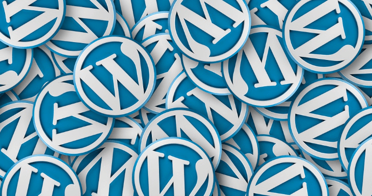
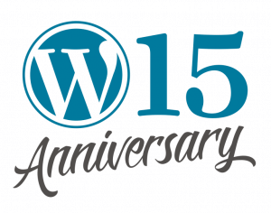
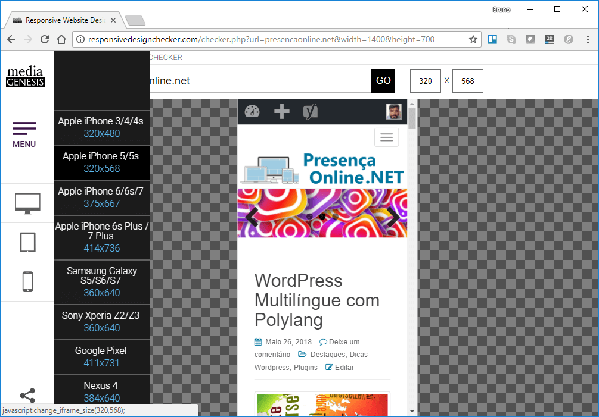
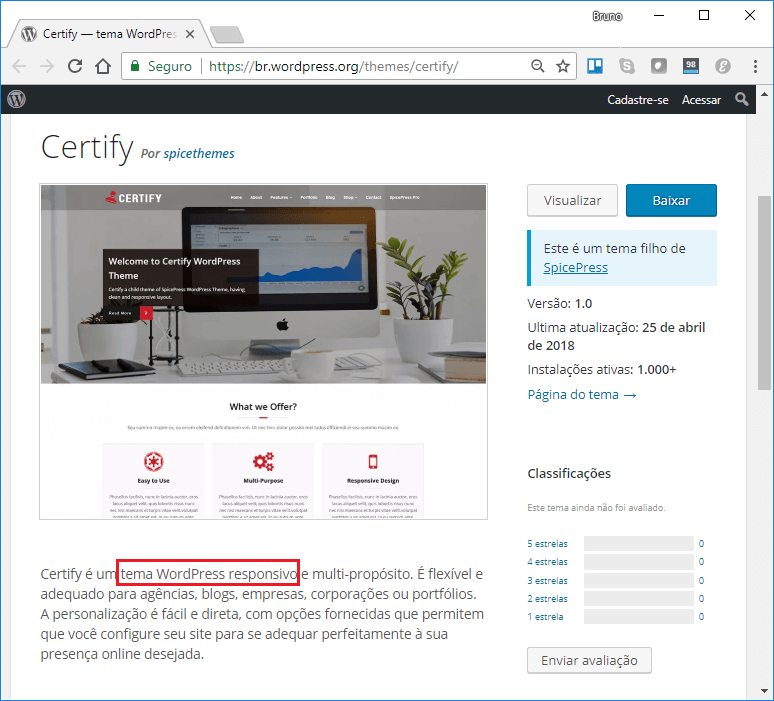
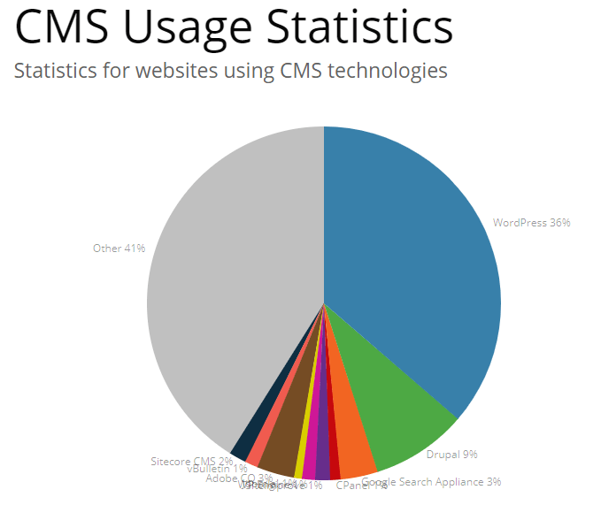
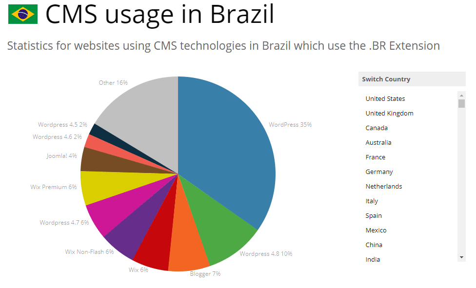
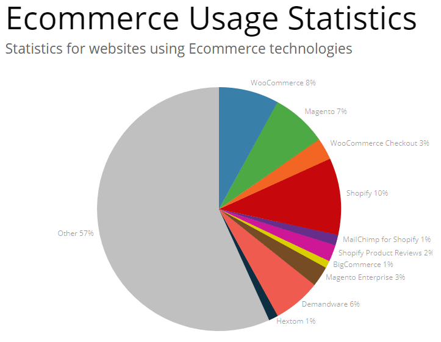
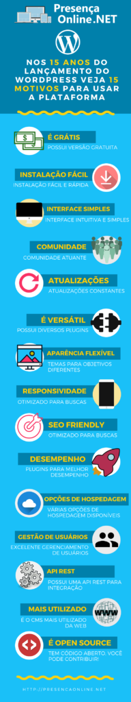

15 motivos para usar WordPress
Na comemoração do 15º aniversário de lançamento do WordPress, apresentamos os motivos por que a plataforma ainda é uma das mais usadas para criação de sites e lojas virtuais.
Porque usar WordPress?

No dia 27 de maio de 2018 o WordPress comemora o 15º aniversário de lançamento da primeira versão da plataforma. Para celebrar a data vamos listar 15 motivos para você usar WordPress que, de acordo com reportagem de março de 2018 da Computerworld, representa 30% de todos os sites na Web.

Motivo 1: É grátis
Apesar do WordPress.com ser um serviço com planos pagos para quem quer ter um site na plataforma, disponibilizado pela empresa Automattic, existe o WordPress.org. Ele disponibiliza uma versão 100% gratuita da ferramenta e que pode ser hospedada onde você achar melhor. Além disso, a grande maioria dos plugins e dos temas disponíveis também tem versões gratuitas (normalmente versões de entrada para as opções PRO). Eles permitem customizar seu site.
Motivo 2: Facilidade de instalação
Até um leigo, que ainda não teve contato com a plataforma, consegue seguir o passo-a-passo de instalação do WordPress. Tendo, por exemplo, uma hospedagem com cpanel ou um programa como Wamp no seu computador pessoal, você consegue ter um novo site em menos de 5 minutos. Além disso, o uso de plugins (veja motivo 6) e de temas (veja motivo 7) reforçam ainda mais este conceito de facilidade de instalação, permitindo expandir as funcionalidades originais.
Motivo 3: Interface intuitiva
Além da instalação da ferramenta ser extremamente simples, a curva de aprendizado para começar a usar WordpPress é bem íngreme, principalmente por causa da sua interface intuitiva. Em pouco tempo um leigo na plataforma consegue disponibilizar seus primeiros sites. Isto porque é fácil entender os conceitos de posts, páginas, temas, plugins, etc. Um bom exemplo dessa facilidade é visto pelos alunos do curso WordPress Prático, que ensina a fazer 4 sites reais mesmo que você nunca tenha tido contato com a plataforma.
Motivo 4: Tem uma comunidade enorme e muito atuante
O fato de ter uma comunidade grande e atuante incentiva a começar a usar WordPress. Existem muitos grupos, sites, fóruns e cursos para começar a usar a plataforma. O iniciante consegue achar ajuda de forma mais fácil e rápida. Além disso, a comunidade também se envolve na atualização da ferramenta e isso garante uma constância na evolução da mesma. É diferente de você usar uma ferramenta proprietária, que depende dos recursos (financeiros e humanos) de uma empresa para obter suporte e novas versões do produto.
Na comemoração dos 15 anos do WordPress, por exemplo, estão sendo organizados vários meetups ao redor do mundo. Até o momento existem 3 previstos no Brasil. Consulte mais detalhes no site comemorativo da plataforma.
Motivo 5: Tem atualizações constantes
Mais um bom motivo para usar o WordPress é o número de atualizações da ferramenta. Isso faz com que a plataforma esteja sempre evoluindo. A comunidade, já citada no item anterior, tem um compromisso grande em manter a plataforma atualizada e corrigir erros identificados, incluindo os de segurança. Isso faz com que seja frequente a liberação de uma nova versão. Sobre as atualizações para aumentar a segurança, vale olhar o artigo do blog sobre isso.
É possível ver no site do WordPress.org o roadmap de atualizações da plataforma desde 2003. No ano de 2017, por exemplo, foram disponibilizadas 2 novas versões minor (4.8 e 4.9), com vários paths ao longo do ano das duas. A versão major 5.0 está prevista para 2018. Para entender melhor o conceito de versionamento semântico, versões major, minor e path dê uma olhada neste link (em inglês).
Motivo 6: É versátil
Com o WordPress é possível criar um site, um blog, uma loja virtual, um Wiki e o que mais você puder imaginar para a Web. Isso devido, principalmente, aos mais de 55 mil plugins disponíveis no diretório da plataforma. É possível encontrar plugins de e-commerce, de formulário, de SEO, de imagens, de segurança, de envio de e-mails e muito mais. Já falamos de alguns deles no nosso blog. Além disso, é possível criar uma rede de sites com uma única instalação usando o conceito de Multisite. Essa grande versatilidade é mais um bom motivo para usar WordPress.
Motivo 7: Flexibilidade na aparência
Além dos plugins, existe uma quantidade grande de temas no diretório próprio do WordPress.org. Eles dão uma versatilidade funcional, permitindo criar não só blogs, mas sites de consultório, de escritório de advocacia, de agência web, empresas de tecnologia, e-commerce, sites de educação e muito mais. Além disso, os temas oferecem uma variedade em relação à UX (User Experience), ao design, às fontes e tudo que tenha relação com a aparência. Temas desenvolvidos pela comunidade ou por empresas, com planos de entrada gratuito para que você possa conhecer os recursos e decidir pela compra ou não da versão PRO. Existem outros sites focados em comercialização de temas para WordPress, como o ThemeForest.
A grande maioria de todos esses temas também tem a característica de serem responsivos, que vem a ser nosso 8º motivo.
Motivo 8: Responsividade
Um dos fatores importantes para classificar os resultados das buscas do Google é a responsividade dos sites. Isto é, a capacidade de adaptar a aparência e disposição com base no tamanho da tela em que é exibido. Espera-se hoje que um mesmo site esteja disponível em computadores (com várias resoluções de tela), tablets e celulares com algumas adaptações visuais. Você pode verificar a responsividade do seu site usando a ferramenta online Responsive Design Checker. Na imagem abaixo é possível ver como o próprio Presença Online .NET é exibido no Apple iPhone 5 / 5S (resolução 320 x 568).

A maioria dos temas disponíveis no diretório do WordPress são responsivos. Vocês pode procurar usando o recurso de palavra chave e usando o termo “responsive”. No entanto, também é possível olhar os detalhes do tema e ver se o mesmo é responsivo ou não. Na imagem abaixo é possível ver a descrição do tema Certify, disponibilizado pela SpiceThemes.

O painel administrativo também possui esta característica de responsividade. Ele está acessível via desktop, smartphones e tablets, potencializando o uso para necessidades diversas.
Motivo 9: SEO Friendly

Outro ponto importante da plataforma e que incentiva a usar WordPress é ser SEO Friendly, isto é, ter características que facilitam o SEO do site. Entre os recursos nativos podemos destacar os Links Permanentes, que permitem criar url amigável, disponibilizando endereços amigáveis para os posts e páginas criados na ferramenta.
Além de recursos nativos, os plugins mais uma vez ganham importância aqui. Entre os diversos disponíveis para ajudar no SEO podemos destacar o Yoast SEO e o All in One SEO. Ambos são indispensáveis para quem for usar WordPress e quiser fazer um trabalho profissional de posicionamento nas buscas.
Motivo 10: Desempenho
Existem alguns fatores que influenciam na performance de um site. Entre os principais podemos destacar a hospedagem, a tecnologia do site e o conteúdo do mesmo. Em relação ao primeiro, vamos detalhar no item 11 as várias opções disponíveis para usar WordPress. Para a tecnologia, temos a ajuda dos plugins mais uma vez. Podemos destacar alguns plugins que incrementam os recursos da plataforma para aumentar a performance:
- WP Super Cache – gera páginas HTML estáticas a partir das páginas dinâmicas do WordPress, para melhorar a performance, que vão atender 99% dos visitantes do seu site.
- WP Performance Score Booster – habilita a compressão com o GZip, aproveita o cache do navegador e realiza outras melhorias que incrementam o desempenho.
- P3 – analise o que está causando lentidão e gera relatório para melhoria de performance.
Em relação ao conteúdo também existem plugins incríveis focados em desempenho. O BJ Lazy Load, por exemplo, melhora a experiência no carregamento de imagens. Também temos o TinyPNG otimiza e reduz o tamanho dos arquivos PNG.
Além disso, a equipe responsável pelo CMS está sempre trabalhando para otimizar a ferramenta. Olhando os detalhes das atualizações é possível ver que além de correção de bugs, existem também melhorias no desempenho.
Motivo 11: Quantidade de opções de hospedagem
Para usar WordPress são necessários poucos pré-requisitos: o PHP (linguagem base a ferramenta), um servidor HTTP (Apache, Nginx, IIS) e o MySQL como banco de dados. Devido a essa característica é muito fácil achar hospedagem para seu site WordPress. Entre opções nacionais e internacionais existem diversas empresas de hospedagem como Hostinger, Hostgator, Locaweb, GoDaddy e outras. Além disso, é possível usar opções de cloud como o AWS LightSail com um custo x benefício incrível e escalabilidade para crescer o site.
Caso você queira rodar a plataforma localmente, no seu computador pessoal, também existem muitas opções, como Wamp e Xampp.
Motivo 12: Excelente gestão de usuários
O WordPress tem como característica uma ótima gestão de usuários. Seja no caso dos usuários internos, controlando os acessos em publicações e alterações, ou dos externos, com usuários que são apenas assinantes, pessoas que comentam as publicações ou até compradores de uma loja virtual em WooCommerce. Isso aumenta a segurança da plataforma. Além disso, existem vários plugins que melhoram essas funcionalidades, adicionando tipos de perfís e campos, entre outras coisas. Esta característica também ajuda em várias customizações da ferramenta, como montar um site de membros por exemplo, com área exclusiva.
Motivo 13: Possui uma API Rest
A API Rest foi incorporada no WordPress em 2015. Ela foi um marco importante na plataforma e abriu uma gama de novas possibilidades para a plataforma, pelo poder e facilidade de integração. Existem registros de companhias que usam o recurso com sucesso, como New York Times e Wired. Além disso, é mais uma forma de usar a criatividade da comunidade na criação de soluções inovadoras. Um exemplo é o projeto no GitHub em Ionic que se integra à API do WordPress e transforma o seu site em um App no Google Play e/ou na Apple Store.
Motivo 14: É a plataforma mais usada na Web
Além da estatística divulgada pela Computerworld, existem outras estatísticas interessantes do WordPress. Olhando as estatísticas de uso de CMS na ferramenta Web Technology Trends do BuiltWith vemos que a plataforma representa 36% de todos os sites mapeados.

Olhando os dados do Brasil o número é ainda mais representativo se considerarmos as várias versões do WordPress. Passa de 50% (35% da última versão, 10% do 4.8, 6% da 4.7, 2% da 4.6 e 2% da 4.5).

Mesmo olhando as estatísticas de ecommerce temos uma representatividade significativa do WooCommerce (8%), bem próximo do Magento, por exemplo.

Também é possível encontrar trabalhos de freelancer relacionados à plataforma em sites como o Workana e vagas de emprego em sites como Catho.
O fato de ser o CMS mais usado na internet dá ainda mais segurança para usar WordPress e por isso foi listado como nosso 14º motivo.
Motivo 15: É Open Source
Esse é para quem tem mais conhecimento em programação. O WordPress, além de gratuito, é open source. Isto é, seu código fica disponível e é possível para qualquer um com bons conhecimentos em desenvolvimento (mais especificamente PHP) alterar e contribuir para a evolução da ferramenta. Existe um artigo específico sobre contribuições para a plataforma e mesmo que você não seja desenvolvedor pode ajudar com testes, documentações, traduções e outras atividades importantes.
No infográfico abaixo você pode ver os 15 motivos elencados de forma visual.

Este post é a forma do Presença Online .NET comemorar os 15 anos do WordPress. O WordPress.org tem feito uma campanha incentivando a celebração dessa data e divulgação com a hashtag #WP15. Se você gostou desse conteúdo, também usa a ferramenta ou se interessou em conhecê-la, não deixe de compartilhar.
No vídeo abaixo, no nosso canal do YouTube, mostramos os motivos e os sites indicados neste post.